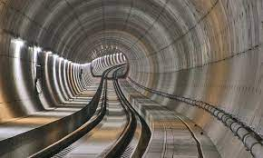
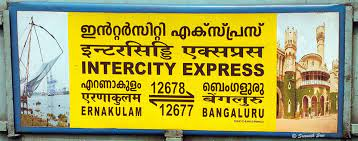
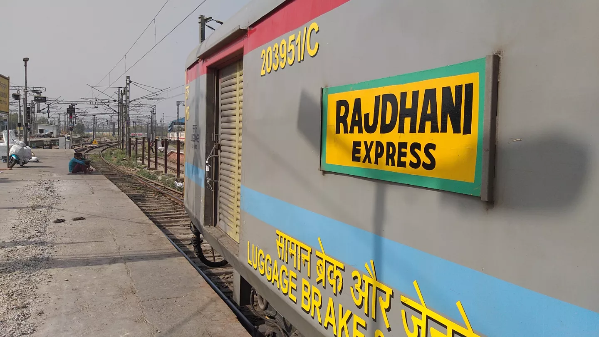

Southern Railways is a railway zone in India that operates in the southern part of the country. It is one of the 18 railway zones under the jurisdiction of Indian Railways, which is the national railway system of India. Established in 1951, Southern Railways has its headquarters in Chennai (formerly known as Madras), Tamil Nadu. This railway zone plays a crucial role in connecting various states in the southern and southwestern regions of India.
Southern Railway is one of the nineteen zones of Indian Railways. It is headquartered at Chennai and operates across the states of Tamil Nadu, Kerala, Andhra Pradesh and the union territory of Puducherry. The origin of Southern Railway can be traced back to the Madras Railway formed in 1845. Post Independence, Southern Railway was created on 14 April 1951 by merging three state railways, namely, the Madras and Southern Mahratta Railway, the South Indian Railway Company, and the Mysore State Railway. Southern railway maintains about 5,081 kilometres (3,157 mi) of railway lines and operates 727 railway stations.| Poster | Train Name | Cost | Details | Booking |
|---|---|---|---|---|
|  | Bengaluru - Ernakulam InterCity | 785 | KSR Bengaluru - Ernakulam InterCity SF Express 12677 is a popular train that runs from KSR Bengaluru City Junction to Ernakulam Junction. Train covers 583.7 km and has stoppage at 14 stations during the journey. KSR Bengaluru - Ernakulam InterCity SF Express has maximum stoppage of 5 minutes at Erode Junction. | Book Now |
|  | Hazrat Nizamuddin Rajdhani | 5,865 | The Rajdhani Express train runs between Secunderabad Jn (SC) to Delhi Hazrat Nizamuddin (NZM). The 12437 Rajdhani Express train leaves Secunderabad Jn at 12:50 hours and reaches NZM station at 10:30 hours on the 2nd day of departure. The Rajdhani Express train covers a total distance of 1667 kilometers. The average speed of the Rajdhani Express train is 76.94 Kmph. (12437) The Rajdhani Express train also has return services with train No. 12438 which departs from NZM at 15:35 hours and arrives SC at 13:35 hours. | Book Now |